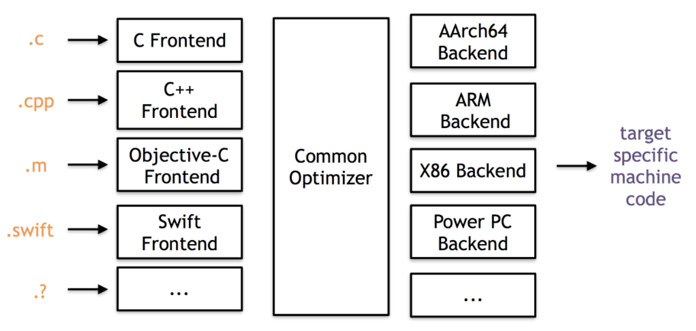

10. 玩转LLVM
- 必备工具
- LLVM 架构原理
- LLVM 前端
- LLVM IR 简介
- LLVM 基本命令
- 深入了解Observer-LLVM 原理
- LLVM Instrument 模块
- LLVM Analayis 模块
必备工具
clang ,LLVM 源码
LLVM 架构原理
前面第五章已经提到了LLVM 的架构,主要分为三部分:前端,优化器和后端.

LLVM 前端
LLVM 前端的作用是把指定的语言序列化转换为LLVM IR (LLVM 中间语言).我们用LLVM 官方例子来做示例:
# Compute the x'th fibonacci number.
def fib(x)
if x < 3 then
1
else
fib(x-1)+fib(x-2)
# This expression will compute the 40th number.
fib(40)
这是一段类似Python 语法的代码,那么首先就要把这段代码做词法分析:
enum Token { // 语法Token 标志
tok_eof = -1,
// commands
tok_def = -2,
tok_extern = -3,
// primary
tok_identifier = -4,
tok_number = -5
};
static std::string IdentifierStr; // Filled in if tok_identifier
static double NumVal; // Filled in if tok_number
static int gettok() { // 解析语法token
static int LastChar = ' ';
// Skip any whitespace.
while (isspace(LastChar)) // 忽略空格
LastChar = getchar();
if (isalpha(LastChar)) { // identifier: [a-zA-Z][a-zA-Z0-9]* , 遇到字符串
IdentifierStr = LastChar;
while (isalnum((LastChar = getchar())))
IdentifierStr += LastChar; // 拼接字符串
if (IdentifierStr == "def") // 如果当前这个标识符是def => def asd() :
return tok_def; // 返回tok_def 标志
if (IdentifierStr == "extern") // 如果是extern => extern ???
return tok_extern;
return tok_identifier; // 如果不是关键字def 和extern 的话,那就识别为字符串
}
if (isdigit(LastChar) || LastChar == '.') { // Number: [0-9.]+ ,如果是数字,组合示例(3,4.)
std::string NumStr;
do {
NumStr += LastChar;
LastChar = getchar();
} while (isdigit(LastChar) || LastChar == '.');
NumVal = strtod(NumStr.c_str(), nullptr); // 字符串转浮点数
return tok_number;
}
if (LastChar == '#') { // 这是注释..
// Comment until end of line.
do
LastChar = getchar();
while (LastChar != EOF && LastChar != '\n' && LastChar != '\r');
if (LastChar != EOF)
return gettok();
}
// Check for end of file. Don't eat the EOF.
if (LastChar == EOF) // 文件结束
return tok_eof;
// Otherwise, just return the character as its ascii value.
int ThisChar = LastChar;
LastChar = getchar();
return ThisChar;
}
gettok() 函数主要是对代码不断进行词法分析,我们还需要一个函数来调用它构造抽象语法树:
static int CurTok;
static int getNextToken() { return CurTok = gettok(); }
static void HandleDefinition() { // 处理声明函数的回调函数
if (ParseDefinition()) {
fprintf(stderr, "Parsed a function definition.\n");
} else {
// Skip token for error recovery.
getNextToken();
}
}
static void HandleExtern() { // 处理引用外部函数的回调函数
if (ParseExtern()) {
fprintf(stderr, "Parsed an extern\n");
} else {
// Skip token for error recovery.
getNextToken();
}
}
static void HandleTopLevelExpression() { // 处理赋值表达式的回调函数
// Evaluate a top-level expression into an anonymous function.
if (ParseTopLevelExpr()) {
fprintf(stderr, "Parsed a top-level expr\n");
} else {
// Skip token for error recovery.
getNextToken();
}
}
/// top ::= definition | external | expression | ';'
static void MainLoop() { // 解析代码转换AST 函数
while (true) {
fprintf(stderr, "ready> ");
switch (CurTok) {
case tok_eof:
return;
case ';': // ignore top-level semicolons.
getNextToken();
break;
case tok_def:
HandleDefinition();
break;
case tok_extern:
HandleExtern();
break;
default:
HandleTopLevelExpression();
break;
}
}
}
HandleDefinition() 里面还调用了ParseDefinition() 函数,这是进一步解析函数结构的代码:
/// ExprAST - Base class for all expression nodes.
class ExprAST { // 基础表达式
public:
virtual ~ExprAST() = default;
};
/// PrototypeAST - This class represents the "prototype" for a function,
/// which captures its name, and its argument names (thus implicitly the number
/// of arguments the function takes).
class PrototypeAST { // 函数参数AST
std::string Name;
std::vector<std::string> Args;
public:
PrototypeAST(const std::string &Name, std::vector<std::string> Args)
: Name(Name), Args(std::move(Args)) {}
const std::string &getName() const { return Name; }
};
/// FunctionAST - This class represents a function definition itself.
class FunctionAST { // 函数AST
std::unique_ptr<PrototypeAST> Proto;
std::unique_ptr<ExprAST> Body;
public:
FunctionAST(std::unique_ptr<PrototypeAST> Proto,
std::unique_ptr<ExprAST> Body)
: Proto(std::move(Proto)), Body(std::move(Body)) {}
};
/// prototype
/// ::= id '(' id* ')'
static std::unique_ptr<PrototypeAST> ParsePrototype() {
if (CurTok != tok_identifier)
return LogErrorP("Expected function name in prototype");
std::string FnName = IdentifierStr; // 解析出函数名
getNextToken();
if (CurTok != '(')
return LogErrorP("Expected '(' in prototype");
std::vector<std::string> ArgNames;
while (getNextToken() == tok_identifier) // 解析函数参数列表
ArgNames.push_back(IdentifierStr);
if (CurTok != ')')
return LogErrorP("Expected ')' in prototype");
// success.
getNextToken(); // eat ')'.
return llvm::make_unique<PrototypeAST>(FnName, std::move(ArgNames));
}
/// definition ::= 'def' prototype expression
static std::unique_ptr<FunctionAST> ParseDefinition() {
getNextToken(); // eat def.
auto Proto = ParsePrototype(); // 解析函数声明部分:函数名和参数
if (!Proto)
return nullptr;
if (auto E = ParseExpression()) // 解析函数代码
return llvm::make_unique<FunctionAST>(std::move(Proto), std::move(E));
return nullptr;
}
ParseDefinition() 函数通过不断的词法分析解析出抽象语法树之后,接下来就是对语法树进行LLVM IR 构建.LLVM IR 贯穿了整个LLVM 编译和优化周期,是LLVM 中重要的概念之一.我们深入介绍LLVM IR 的相关知识.
LLVM IR 简介
基于上面的代码,继续修改如下:
/// PrototypeAST - This class represents the "prototype" for a function,
/// which captures its name, and its argument names (thus implicitly the number
/// of arguments the function takes).
class PrototypeAST {
std::string Name;
std::vector<std::string> Args;
public:
PrototypeAST(const std::string &Name, std::vector<std::string> Args)
: Name(Name), Args(std::move(Args)) {}
Function *codegen();
const std::string &getName() const { return Name; }
};
/// FunctionAST - This class represents a function definition itself.
class FunctionAST {
std::unique_ptr<PrototypeAST> Proto;
std::unique_ptr<ExprAST> Body;
public:
FunctionAST(std::unique_ptr<PrototypeAST> Proto,
std::unique_ptr<ExprAST> Body)
: Proto(std::move(Proto)), Body(std::move(Body)) {}
Function *codegen();
};
Function *PrototypeAST::codegen() {
// Make the function type: double(double,double) etc.
std::vector<Type *> Doubles(Args.size(), Type::getDoubleTy(TheContext)); // 创建函数参数
FunctionType *FT =
FunctionType::get(Type::getDoubleTy(TheContext), Doubles, false); // 创建LLVM 函数类型
Function *F =
Function::Create(FT, Function::ExternalLinkage, Name, TheModule.get()); // 创建LLVM 函数
// Set names for all arguments.
unsigned Idx = 0;
for (auto &Arg : F->args()) // 设置参数名字
Arg.setName(Args[Idx++]);
return F;
}
Function *FunctionAST::codegen() {
// First, check for an existing function from a previous 'extern' declaration.
Function *TheFunction = TheModule->getFunction(Proto->getName()); // 获取当前LLVM 环境中是否有同名的函数
if (!TheFunction)
TheFunction = Proto->codegen(); // 如果没有同名函数,那就调用PrototypeAST::codegen() 生成函数声明
if (!TheFunction) // 如果生成失败了..
return nullptr;
// Create a new basic block to start insertion into.
BasicBlock *BB = BasicBlock::Create(TheContext, "entry", TheFunction); // 创建代码块
Builder.SetInsertPoint(BB); // Builder 是LLVM IRBuilder<> ,用于生成LLVM IR 代码,这是设置LLVM IR 生成设置到当前BasicBlock ..
// Record the function arguments in the NamedValues map.
NamedValues.clear();
for (auto &Arg : TheFunction->args()) // 收集函数参数名字
NamedValues[Arg.getName()] = &Arg;
if (Value *RetVal = Body->codegen()) { // 函数代码生成
// Finish off the function.
Builder.CreateRet(RetVal); // 为函数返回创建RET 指令
// Validate the generated code, checking for consistency.
verifyFunction(*TheFunction); // 让LLVM 验证生成的代码
return TheFunction;
}
// Error reading body, remove function.
TheFunction->eraseFromParent();
return nullptr;
}
/// NumberExprAST - Expression class for numeric literals like "1.0".
class NumberExprAST : public ExprAST {
double Val;
public:
NumberExprAST(double Val) : Val(Val) {}
Value *codegen() override;
};
/// VariableExprAST - Expression class for referencing a variable, like "a".
class VariableExprAST : public ExprAST {
std::string Name;
public:
VariableExprAST(const std::string &Name) : Name(Name) {}
Value *codegen() override;
};